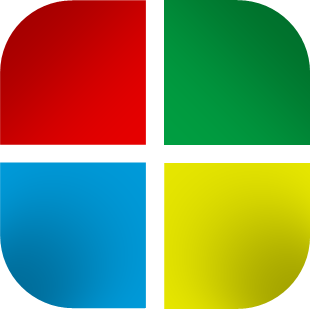
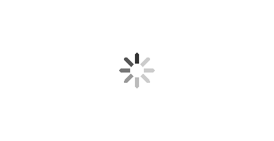

Polocrafting
GitHub
 Démarrer
Windows
Titre de la fenêtre
Générateur de fond d'écran
Générer le fond (ça peut être long avec un grand écran)
La résolution de l’image dépend de la taille de la page actuelle et de son zoom
Pour retirer la barre de navigation, téléchargez la page html (voir la barre des tâches)
Actualisez la page pour d’autres couleurs/motifs
Enregistrer l'image en local sur la machine (Actualiser la page (f5 ou ↻ pour actualiser))

Création de l'image en cours ...
Personnaliser
Changer l'opacité :
Flou des fenêtres :
Changer l'arrière-plan
Changer la couleur
367
XP
W7
Personnaliser
Supprimer cookies
Bloc Notes
Calculatrice
Générateur de fond d'écran
Youtube player